Bebe té en esta taza y no recalientas tus manos.
Precio: 3000 Pesos De Argentina (tres-mil Pesos De Argentina)
Colores: claro café, oscuro café
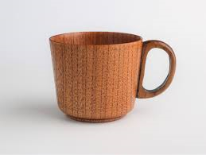Fuente: https://www.superdelivery.com/en/r/pd_p/7221676/
Bebe en Argentina con la bandera de Argentina.
Precio: 1900 Pesos De Argentina (mil y nueve cien Pesos De Argentina)
Colores: claro café, oscuro café
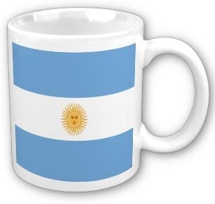Fuente: https://www.amazon.com/MyHeritageWear-Argentina-Flag-Coffee-Mug/dp/B007JD2GTO
La Taza Básica tiene uno color pero no otros colores.
Precio: 1000 Pesos De Argentina (mil Pesos De Argentina)
Colores: blanco, negro, azul, verde, rojo, cafe
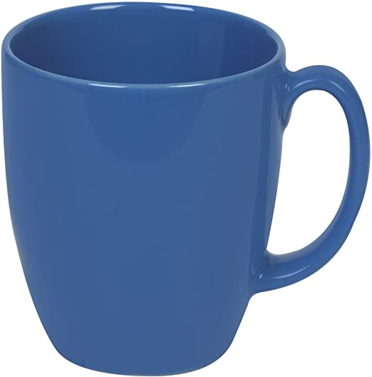Fuente: https://www.amazon.com/CORELLE-Corelle-livingware-ounce-Pound/dp/B000KYWRA2
Esta taza tiene el oso esculpido.
Precio: 4000 Pesos De Argentina (pequeña), 6000 Pesos De Argentina (larga) (quatro mil Pesos De Argentina (pequeña), seis mil Pesos De Argenina (larga))
Tamaños: pequeña, larga
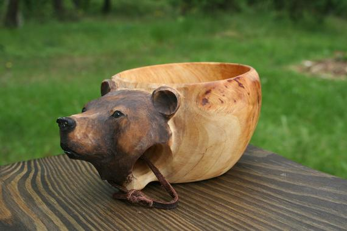Fuente: https://www.etsy.com/listing/811857159/bear-kuksa-guksi-wooden-mug-hand-carved
Esta taza tiene el Zorro esculpido. El zorro es pintado. Es anaranjada, negro, y blanco.
Precio: 4000 Pesos De Argentina (pequeña), 6000 Pesos De Argentina (larga) (quatro mil Pesos De Argentina (pequeña), seis mil Pesos De Argenina (larga))
Tamaños: pequeña, larga
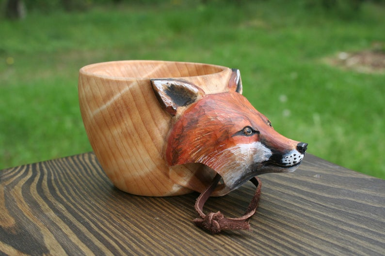Fuente: https://www.etsy.com/listing/791054240/fox-kuksa-guksi-wooden-mug-of-birch-hand?ref=shop_home_active_10&frs=1&crt=1
Esta taza tiene un adorno que tiene los círculos de claro café y obscuro café.
Precio: 3000 Pesos De Argentina (pequeña), 4500 Pesos De Argentina (larga) (quatro mil Pesos De Argentina (pequeña), seis mil Pesos De Argenina (larga))
Tamaños: pequeña, larga
Materiales: roble, acre, cedro, palisandro
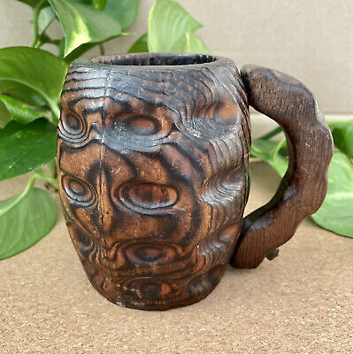Fuente: https://picclick.com/Set-3-Antique-Carved-Wooden-332547122685.html
Esta taza tiene el bisonte. Es café y negro.
Precio: 4000 Pesos De Argentina (pequeña), 6000 Pesos De Argentina (larga) (quatro mil Pesos De Argentina (pequeña), seis mil Pesos De Argenina (larga))
Tamaños: pequeña, larga
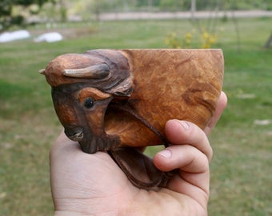Fuente: https://www.etsy.com/listing/852738625/bison-kuksa-guksi-wooden-mug-hand-carved?ref=shop_home_active_1&frs=1
Esta taza tiene la águila. Es café, amarillo, y negro.
Precio: 4000 Pesos De Argentina (pequeña), 6000 Pesos De Argentina (larga) (quatro mil Pesos De Argentina (pequeña), seis mil Pesos De Argenina (larga))
Tamaños: pequeña, larga
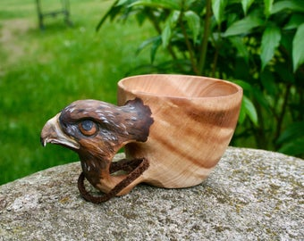Fuente: https://www.etsy.com/listing/829145075/eagle-kuksa-guksi-wooden-mug-hand-carved?ref=shop_home_active_5&frs=1
Esta taza tiene el lince. Es anaranjada, blanco, y negro.
Precio: 4000 Pesos De Argentina (pequeña), 6000 Pesos De Argentina (larga) (quatro mil Pesos De Argentina (pequeña), seis mil Pesos De Argenina (larga))
Tamaños: pequeña, larga
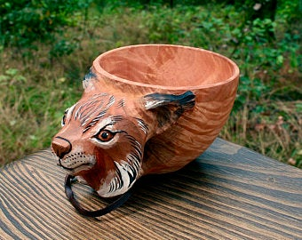Fuente: https://www.etsy.com/listing/943042094/lynx-kuksa-guksi-wooden-mug-of-birch?ref=shop_home_active_10&frs=1
Esta taza tiene el alce. Es café y negro.
Precio: 4000 Pesos De Argentina (pequeña), 6000 Pesos De Argentina (larga) (quatro mil Pesos De Argentina (pequeña), seis mil Pesos De Argenina (larga))
Tamaños: pequeña, larga
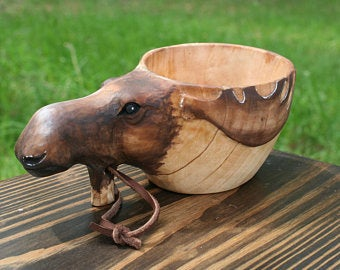Fuente: https://www.etsy.com/listing/942711456/moose-kuksa-guksi-wooden-mug-hand-carved?ref=shop_home_active_11&frs=1
Esta taza tiene el mapache. Es blanco y negro.
Precio: 4000 Pesos De Argentina (pequeña), 6000 Pesos De Argentina (larga) (quatro mil Pesos De Argentina (pequeña), seis mil Pesos De Argenina (larga))
Tamaños: pequeña, larga
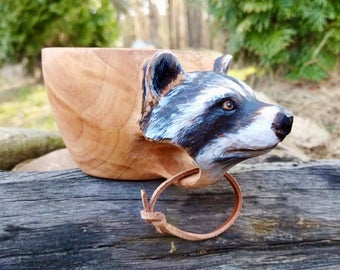Fuente: https://www.etsy.com/listing/981373639/raccoon-kuksa-guksi-wooden-mug-hand?ref=shop_home_active_8&frs=1
Esta taza tiene el salmón rojo. Es blanco y gris.
Precio: 4000 Pesos De Argentina (pequeña), 6000 Pesos De Argentina (larga) (quatro mil Pesos De Argentina (pequeña), seis mil Pesos De Argenina (larga))
Tamaños: pequeña, larga
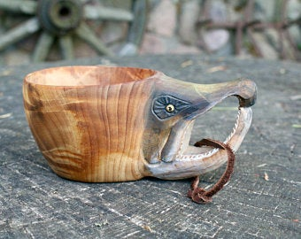Fuente: https://www.etsy.com/listing/851485415/sockeye-fish-kuksa-guksi-wooden-mug-hand?ref=shop_home_active_14&frs=1&sca=1
El centro de esta taza es azul. El superficie es anaranjada. El parte de abajo tiene los flores que son blanco y los otros partes del parte de abajo son negro
Precio: 5000 Pesos De Argentina (pequeña), 7000 Pesos De Argentina (larga) (cinco mil Pesos De Argentina (pequeña), siete mil Pesos De Argenina (larga))
Tamaños: pequeña, larga
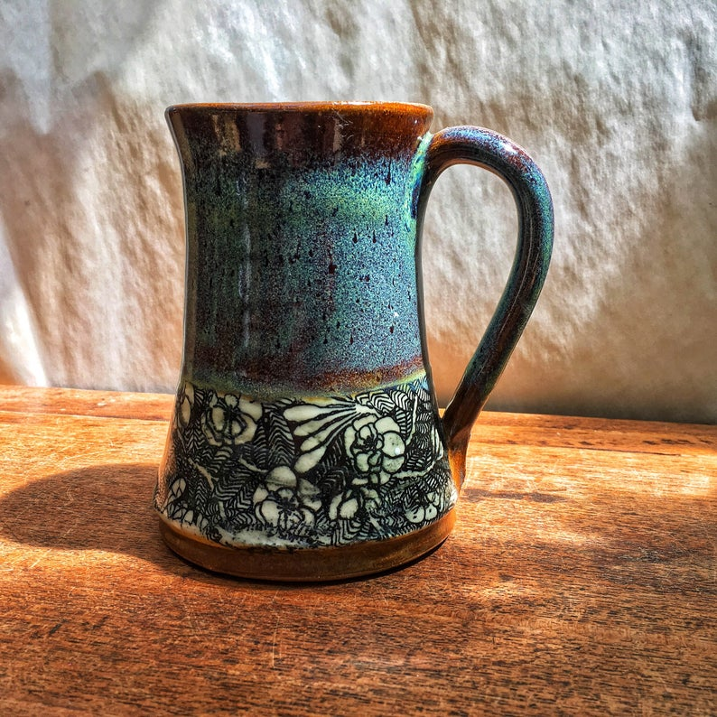Fuente: https://www.etsy.com/listing/614766345/handmade-pottery-mug-with- flowers?gpla=1&gao=1&&utm_source=google&utm_medium=cpc&utm_campaign=shopping _us_ps-b-home_and_living-kitchen_and_dining-drink_and_barware-drinkware-mugs &utm_custom1=_k_Cj0KCQjwvYSEBhDjARIsAJMn0lieKUhYyeNpSKoKPVhQvSgCszAa-2zPCjo VAPhVUpwSEneZf2CP68MaAnu-EALw_wcB_k_&utm_content=go_12566247314_121162416842 _507300170084_pla-498657395952_c__614766345_108395256&utm_custom2=12566247314 &gclid=Cj0KCQjwvYSEBhDjARIsAJMn0lieKUhYyeNpSKoKPVhQvSgCszAa-2zPCjoVAPhVUpwSE neZf2CP68MaAnu-EALw_wcB
Esta taza tiene el león. Es de un color.
Precio: 4000 Pesos De Argentina (pequeña), 6000 Pesos De Argentina (larga) (quatro mil Pesos De Argentina (pequeña), seis mil Pesos De Argenina (larga))
Tamaños: pequeña, larga
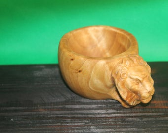Fuente: https://www.etsy.com/market/guksi
Esta taza está hechos de el cuerno. Es café.
Precio: 4000 Pesos De Argentina (pequeña), 6000 Pesos De Argentina (larga) (quatro mil Pesos De Argentina (pequeña), seis mil Pesos De Argenina (larga))
Tamaños: pequeña, larga
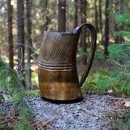Fuente: https://grimfrost.com/products/horn-mug-carved?currency =USD&variant=27368735433&utm_medium=cpc&utm_source=google&utm_ campaign=Google%20Shopping&gclid=Cj0KCQjwyZmEBhCpARIsALIzmnJ4QCJsIR1xEC1wsys1wDdz1lkK5 _F-fPHoyJbweyw8NT9NPKaXyPAaArzKEALw_wcB
Esta taza tiene el adorno de madera. Es café.
Precio: 3000 Pesos De Argentina (pequeña), 5000 Pesos De Argentina (larga) (tres mil Pesos De Argentina(pequeña), cinco mil Pesos De Argenina (larga))
Tamaños: pequeña, larga
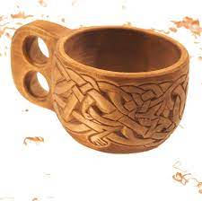Fuente: https://www.tabernavagantis.com/listing/810559709/intricately-carved-wooden-cup-viking
Esta taza tiene el Tigre. Es anaranjada, rosada, blanco, y negro.
Precio: 4000 Pesos De Argentina (pequeña), 6000 Pesos De Argentina (larga) (quatro mil Pesos De Argentina (pequeña), seis mil Pesos De Argenina (larga))
Tamaños: pequeña, larga
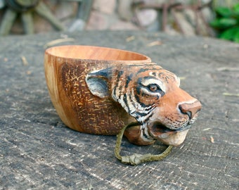Fuente: https://www.etsy.com/listing/844949585/tiger-kuksa-guksi-wooden-mug-of-birch?ga_order=most_relevant&ga_search_type=all&ga_view_type=gallery&ga_search_query=guksi+tiger&ref=sr_gallery-1-1&organic_search_click=1&frs=1
Esta taza tiene el mapache. Es blanco y negro.
Precio: 4000 Pesos De Argentina (pequeña), 6000 Pesos De Argentina (larga) (quatro mil Pesos De Argentina (pequeña), seis mil Pesos De Argenina (larga))
Tamaños: pequeña, larga
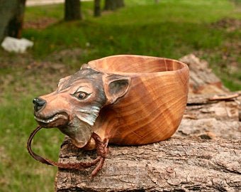Fuente: https://www.etsy.com/listing/981373639/raccoon-kuksa-guksi-wooden-mug-hand?ref=shop_home_active_8&frs=1
Esta taza tiene el mapache. Es blanco y negro.
Precio: 4000 Pesos De Argentina (pequeña), 3000 Pesos De Argentina (larga) (quatro mil Pesos De Argentina (pequeña), tres mil Pesos De Argenina (extremadamente pequeña))
Tamaños: pequeña, extremadamente pequeña
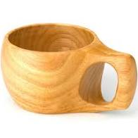Fuente: https://www.etsy.com/listing/981373639/raccoon-kuksa-guksi-wooden-mug-hand?ref=shop_home_active_8&frs=1
Esta taza tiene el mapache. Es blanco y negro.
Precio: 4000 Pesos De Argentina (pequeña), 6000 Pesos De Argentina (larga) (quatro mil Pesos De Argentina (pequeña), seis mil Pesos De Argenina (larga))
Tamaños: pequeña, larga
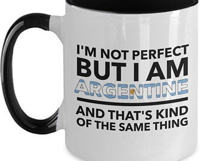Fuente: https://www.etsy.com/listing/981373639/raccoon-kuksa-guksi-wooden-mug-hand?ref=shop_home_active_8&frs=1